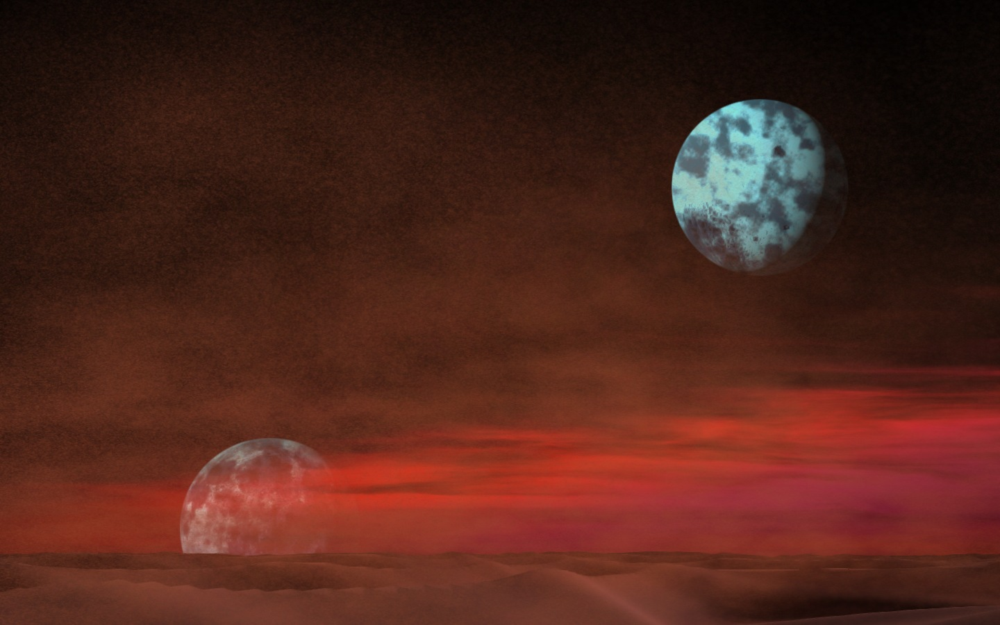
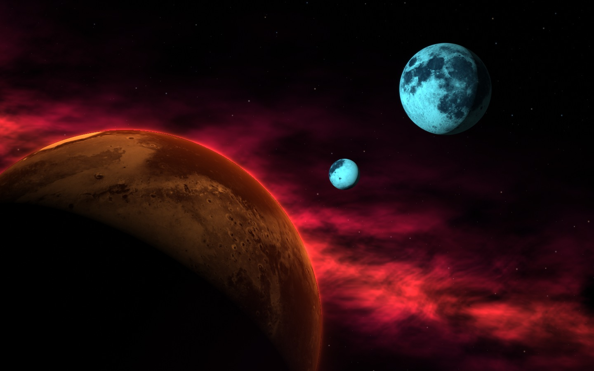

Arrakis / 1984 backgrounds
Cyan moons, crimson skies, and deep shadows. Explore each scene as WebGL, a web component, or an SVG background.

Rolling sand, low dunes, and a burning horizon.

A slow eclipse, drifting stars, and crimson clouds.